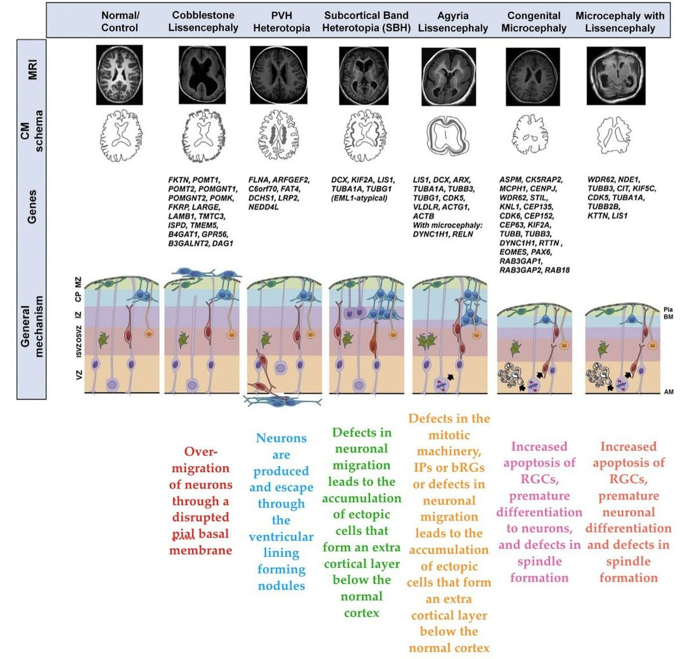

Qué cubre esta guía
Las citas remiten a la fuente y a su página o sección, por ejemplo Zeise p. 108, Purves p. 78 o apuntes, bloque III.
Fuera de alcance: la guía axónica y el establecimiento de mapas topográficos, de los que el material solo adelanta el inicio del capítulo 23.
Lo esencial en 60 segundos
- El tubo neural se divide en neurómeros y rombómeros, y los genes Hox les dan identidad anteroposterior.
- El organizador y la notocorda inducen el sistema nervioso; Shh ventraliza y Nogina y Cordina protegen el destino neural.
- Las neuronas nacen en la zona ventricular, donde el núcleo sube y baja con el ciclo y el cilio apical lee el entorno.
- La división simétrica amplía la reserva de células madre; la asimétrica produce un neuroblasto y conserva una progenitora.
- Delta-Notch decide por contacto: la célula con más Delta activa bHLH y se diferencia; sus vecinas siguen como madre.
- La fecha de nacimiento ordena las capas: la corteza se construye de dentro hacia afuera y la retina en orden inverso.
- La glía radial es célula madre y andamio; las interneuronas GABAérgicas llegan por migración tangencial desde las eminencias ganglionares.
- La corteza suma seis capas y se pliega en surcos para ganar superficie; la migración fallida produce lisencefalia y heterotopias.
Del tubo neural al mapa regional
El tubo neural no se convierte en cerebro por crecimiento uniforme, sino por subdivisión y especialización progresiva. Al cerrarse, se distinguen tres vesículas primarias, prosencéfalo, mesencéfalo y rombencéfalo, más la médula espinal; el prosencéfalo se divide después en telencéfalo y diencéfalo, y el rombencéfalo en metencéfalo y mielencéfalo. La luz encerrada se transforma en el sistema ventricular, de modo que los ventrículos laterales, el tercer ventrículo, el acueducto cerebral y el cuarto ventrículo son el testimonio anatómico de esa compartimentación temprana, y tres flexuras, cefálica, cervical y pontina, acompañan el plegamiento inicial Purves p. 528. Resta saber cómo un epitelio tan parecido a sí mismo adquiere identidades regionales estables.
La respuesta comenzó con una observación morfológica: gran parte del tubo se organiza en unidades repetitivas llamadas neurómeros. La hipótesis de la segmentación se importó de Drosophila, donde los genes homeóticos, también llamados homeobox, dividen el embrión en segmentos que darán cabeza, tórax y abdomen Purves p. 529. En vertebrados existen los genes Hox, surgidos por duplicaciones sucesivas, con cuatro conjuntos en cromosomas distintos Purves pp. 529-530. Su expresión respeta una correspondencia notable: el orden de los genes en el cromosoma, de 3' a 5', reproduce su orden de activación a lo largo del eje anterior a posterior, fenómeno llamado colinealidad Purves p. 530.
El rombencéfalo es el caso mejor resuelto. Se divide en ocho rombómeros, cada uno identificable por una combinación propia de genes Hox, y cada rombómero, solo o junto al adyacente, origina las neuronas motoras de un nervio craneal y la cresta neural que contribuye a su ganglio sensorial Purves pp. 529-531. El rombómero 4 se reconoce por HoxB-1, y esa marca persiste en las células madre que generan el núcleo motor correspondiente, de modo que la disposición anteroposterior de los nervios craneales refleja la segmentación inicial Purves p. 531. La prueba funcional es un ratón mutante: sin Hoxb1, las células del rombómero 4 producen motoneuronas que inervan blancos trigeminales en lugar de faciales Kandel cap. 45. La conclusión es que un límite de expresión génica puede convertirse en un límite anatómico y funcional.
Los Hox no gobiernan todo el encéfalo. Su expresión no se extiende al mesencéfalo ni al prosencéfalo, donde operan otros factores de transcripción, en particular de las familias DLX y PAX, homólogos de genes que en la mosca influyen en apéndices, cabeza y órganos sensoriales Purves p. 531. Al igual que los Hox en el rombencéfalo temprano, esos factores confieren identidad a las células madre de cada región local y orientan su diferenciación Purves pp. 530-531. La identidad regional no depende entonces de un gen maestro, sino de combinaciones restringidas a dominios y mantenidas en la descendencia de cada territorio.
El organizador y los morfógenos que dibujan los ejes
Antes de que existan neuronas, el ectodermo debe recibir permiso para volverse neural. Los experimentos clásicos de extirpación y trasplante mostraron que la identidad depende de instrucciones del entorno: el organizador, equivalente a la fosita primitiva o labio dorsal del blastoporo, es una pequeña población de células epiteliales que da origen a la notocorda Purves p. 532. Trasplantado a otra ubicación, induce una notocorda secundaria y un segundo sistema nervioso en el ectodermo del huésped, efecto que se ve como un renacuajo bicéfalo Purves pp. 532-533. El trasplante de una notocorda a una posición ectópica forma una placa del suelo ectópica y especifica neuronas motoras donde antes había sensoriales, lo que demuestra que la identidad neural depende del entorno y no del destino intrínseco de la célula Purves p. 532.
La prueba molecular llegó en la década de 1990. Las señales provienen de la notocorda, la placa del suelo, la placa del techo, el propio neuroectodermo y tejidos mesodérmicos como las somitas, y actúan de forma graduada por difusión o en los límites entre poblaciones Purves pp. 532-533. El ácido retinoico, derivado de la vitamina A, activa receptores nucleares que funcionan como factores de transcripción y regula, entre otros genes, Shh; su exceso o su déficit producen malformaciones, y la isotretinoína es el ejemplo clínico de un teratógeno basado en retinoides Purves p. 533. FGF aporta 22 ligandos que activan receptores tirosina-cinasa y la vía MAP cinasa-ras, con FGF8 como regulador del cerebro anterior, el mesencéfalo y las neuronas sensoriales craneales Purves pp. 533-534.
Las BMP pertenecen a la familia TGF-β, son seis ligandos y señalizan por fosforilación de SMAD 1, 5 y 8; en el ectodermo imponen destino epidérmico, de modo que la neuralización exige antagonizarlas Purves pp. 533-534. Nogina y Cordina se unen directamente a las BMP e impiden su unión al receptor, y esa regulación negativa es el fundamento de la inducción neural Purves p. 534. Wnt completa el repertorio con 19 ligandos: la vía canónica usa Frizzled y LRP5/6, estabiliza β-catenina y activa TCF/LEF, mientras la no canónica o de polaridad celular planar moviliza calcio o la cinasa Jnk para alargar la placa y el tubo Purves pp. 534-535.
Shh ocupa un lugar aparte porque organiza el eje dorsoventral. En ausencia de la señal, un complejo inhibitorio deja disponible solo a Gli3, que reprime; cuando Shh se une a Patched, Smoothened se acumula, el complejo se desarma y Gli1 entra al núcleo para activar genes de identidad neural Purves pp. 534-535. Sus tres funciones son cerrar el tubo en la línea media anterior, especificar precursores ventrales, sobre todo motoneuronas, y modular la diferenciación posmitótica Purves p. 535. En la médula espinal, Shh de la placa del suelo y Nogina de la placa del techo establecen los dominios ventral, intermedio y dorsal, que corresponden a motoneuronas, interneuronas y neuronas sensoriales de relevo Purves pp. 535-536.
La combinación de estas señales produce una expresión en mosaico de factores de transcripción, y la combinación necesaria para definir una clase neuronal se llama código de transcripción Purves pp. 535-536. Ese código no solo nombra a la neurona: sus dianas incluyen moléculas de migración, crecimiento de axones y dendritas, formación de sinapsis, neurotransmisores, receptores y canales Purves p. 536. La holoprosencefalia muestra el costo de interrumpir la vía: falla la separación de los hemisferios, puede aparecer ciclopía y la incidencia prenatal, entre 1/30 y 1/400, supera largamente la de nacidos vivos, entre 1/10.000 y 1/16.000 Purves p. 538.
Los teratógenos confirman que estas vías no son una curiosidad de laboratorio. El déficit materno de ácido fólico compromete la replicación del DNA y la división y movilidad celular, con lo que interrumpe el cierre del tubo; el exceso de vitamina A, el alcohol y la talidomida alteran la diferenciación al aportar o bloquear señales en momentos y lugares inapropiados Purves p. 537. El metabolismo del colesterol también importa, porque el colesterol modifica a Shh y su alteración compromete la señalización Purves pp. 537-540. La holoprosencefalia, el meduloblastoma y el carcinoma basocelular ilustran que la misma vía puede fallar en tejidos distintos y producir enfermedades muy diversas Purves p. 539.
| Vía | Ligando y receptor | Efecto principal |
|---|---|---|
| Ácido retinoico | Retinoides sobre receptores nucleares | Proliferación, diferenciación y regulación de Shh |
| FGF | 22 ligandos sobre receptores tirosina-cinasa | Proliferación y diferenciación; FGF8 en cerebro anterior |
| BMP | 6 ligandos sobre serina-cinasas, SMAD 1/5/8 | Destino epidérmico; antagonizada por Nogina y Cordina |
| Wnt | 19 ligandos sobre Frizzled y LRP5/6 | Proliferación, adhesión y migración de cresta neural |
| Shh | Patched y Smoothened, Gli1 y Gli3 | Cierre del tubo e identidad ventral |
Fuente: Purves pp. 533-535.
La fábrica ventricular
El cerebro humano contiene del orden de 86.000 millones de neuronas y una cifra semejante de células gliales, y todas deben generarse en pocos meses a partir de una población pequeña de células madre Purves p. 540. La neurogénesis comienza cuando el patrón inicial del tubo ya está establecido, y las precursoras se concentran en la zona ventricular, la capa más interna del neuroectodermo que rodea la luz Purves pp. 540-541. Allí el ciclo celular no ocurre en un sitio fijo: el núcleo se desplaza de manera estereotipada y ese movimiento, junto con la polaridad de la célula, regula la proliferación y la decisión de generar neuronas Purves p. 541.
En G1 el núcleo está cerca de la superficie ventricular; durante la fase S migra hacia la superficie pial mientras se replica el DNA; en G2 regresa hacia la luz, y en la mitosis la célula pierde su conexión con la superficie pial y se divide Purves p. 541. El dominio apical, que enfrenta la luz, alberga el cilio primario, un orgánulo que muestrea Shh y el factor de crecimiento similar a la insulina presentes en el líquido amniótico o en el líquido cefalorraquídeo Purves p. 543. Esa lectura se traduce en instrucciones de proliferación o de división neurogénica terminal, de modo que la posición y la longitud de la prolongación basal también influyen en el modo de división y en el destino Purves p. 541.
El modo de división decide el tamaño de la reserva y el momento de la neurogénesis. La división simétrica produce dos células madre autorrenovadoras y amplifica la población; la asimétrica produce un neuroblasto posmitótico y una progenitora que reingresa al ciclo, de manera que genera neuronas sin agotar la reserva Purves p. 541. Cuando la división simétrica ocurre con el plano ortogonal a la superficie apical, cada célula hija recibe un cilio primario nuevo Purves p. 543.
No todas las progenitoras son equivalentes. La glía radial conserva características moleculares de la glía, tiene un dominio apical junto a la luz y una prolongación basal que alcanza la superficie pial, se divide lentamente y cumple doble función: célula madre multipotente y sustrato de migración Purves pp. 540-541. Las progenitoras basales, también llamadas amplificadoras de tránsito, se dividen más rápido y de forma asimétrica, tienen capacidad limitada, sus dominios apicales ya no contactan la luz y sus prolongaciones basales son de longitud variable; su función es amplificar el número de células diferenciadas, y pasado el período de neurogénesis la mayoría de las precursoras desaparece, mientras las células gliales conservan grados de renovación a lo largo de la vida Purves p. 541.
La geometría del epitelio explica por qué el proceso es tan sensible. Las células del neuroepitelio están unidas tanto a la superficie ventricular como a la pial, y el núcleo se desplaza dentro de un citoplasma alargado; cuando la célula pierde el contacto con la superficie externa y entra en mitosis, la orientación del plano de división respecto de la superficie apical acompaña la generación de un cilio nuevo en la célula hija Purves p. 543. Esa dependencia de la posición y de la adhesión convierte a la zona ventricular en algo más que una fábrica: es un sensor de la forma del tejido.
Delta-Notch: la decisión de dejar de ser célula madre
Una célula madre no decide su destino consultando un plano general, sino mirando a sus vecinas inmediatas. La señalización Delta-Notch ocurre solo entre células yuxtapuestas: el ligando Delta de una célula se une al receptor Notch de la contigua, lo que provoca la escisión del dominio intracelular de Notch, o NICD, y su transporte al núcleo, donde se une a RBP-J, un factor que habitualmente reprime, y revierte esa represión; el resultado es la transcripción de genes Hes y de factores neurogénicos bHLH, entre ellos las neurogeninas Purves p. 543. Los genes Hes se llaman así por sus contrapartes de Drosophila, hairless y enhancer-of-split, y su función es influir en los factores que ejecutan la diferenciación terminal Purves pp. 543-544.
El sistema se resuelve por competencia local. Un aumento estocástico de Delta en una célula induce la regulación negativa de Delta en sus vecinas; la célula con más ligando incrementa también la expresión de bHLH y se prepara para diferenciarse, mientras las que bajaron Delta permanecen como células madre Purves pp. 543-544. Este mecanismo de inhibición lateral garantiza que no todas las células de un grupo se diferencien al mismo tiempo y que quede una reserva proliferativa Purves p. 544.
La misma lógica sirve para la glía. Se cree que mecanismos regulados por Notch y por factores bHLH influyen en la generación de oligodendrocitos y astrocitos, y que la decisión final de salir del ciclo depende de interacciones locales mediadas por contacto Purves p. 544. En detalle, Olig1, Olig2 y Nkx2.1 favorecen el destino oligodendroglial, mientras la antagonización continua entre proteínas bHLH, señalización de Notch y neurregulina inclina la balanza hacia astrocitos; las células ependimarias, adyacentes a los ventrículos, parecen evitar la diferenciación y podrían incluir una subpoblación de células madre Purves p. 545.
Conviene retener la jerarquía: el linaje limita la diferenciación final, pero la mayor parte de la evidencia favorece que los aspectos esenciales están regulados sobre todo por interacciones locales célula-célula, seguidas de una historia distinta de regulación transcripcional en cada célula, de modo que quién es el vecino pesa más que quién es el padre, aunque ambos factores dejen huella Purves p. 544.
La fecha de nacimiento y el orden de las capas
Una neurona posmitótica conserva para siempre la memoria de su última división. Ese momento se llama fecha de nacimiento y permite distinguir poblaciones que, de otro modo, parecen idénticas Purves p. 544. La retina ofrece el ejemplo más claro: las células ganglionares, situadas en la capa más externa y cercana al cristalino, se generan primero, y los bastones, en la capa más interna, se generan al final; entre ambos extremos, el orden aproximado es ganglionares, horizontales y conos, luego amacrinas, y por último bastones y bipolares, un orden que no solo fija la posición, sino que acompaña la expresión de factores de transcripción y la formación de conexiones de cada capa retiniana Purves p. 545.
La corteza cerebral invierte la geometría. Sus seis capas se generan de dentro hacia afuera: las neuronas más antiguas ocupan las capas profundas y las generaciones posteriores migran radialmente, atraviesan a las ya instaladas y se ubican superficialmente Purves p. 545. Las neuronas nacidas temprano expresan factores de transcripción distintos de las nacidas tarde, y esa diferencia acompaña la identidad laminar Purves pp. 545-546. Antes de que se consoliden las capas definitivas aparecen dos destinos tempranos: la subplaca, transitoria, donde se ubican algunas de las células más tempranas, y la capa cortical 1, poblada por células de Cajal-Retzius; parte de las células de la subplaca sobrevive en la sustancia blanca Purves p. 546.
Los marcadores permiten seguir esa identidad. Satb2 se enriquece en las neuronas de proyección de las capas 2/3 y en un subconjunto de las capas 5/6, mientras Ctip2 marca las neuronas de proyección de las capas 4, 5 y 6 Purves p. 546. En el mono rhesus, las divisiones terminales se concentran en la primera mitad de la gestación y se completan hacia el día embrionario 105, de un total de aproximadamente 165 días, datos obtenidos con timidina radiactiva administrada a la madre Purves pp. 545-546. El mismo principio de correspondencia entre capa, momento de origen y propiedades moleculares se repite en hipocampo, cerebelo, colículo superior y retina Purves pp. 546-547.
El orden no es un detalle decorativo: de él depende la laminación. En el ratón reeler, la falta de reelina funcional, secretada por las células de Cajal-Retzius y señalizada por receptores que incluyen el receptor de ApoE 2 y VLDLR con activación de Dab1, impide que las neuronas se desprendan del andamio glial, de modo que se acumulan bajo la placa cortical, con una laminación parcialmente invertida y pérdida de la zona marginal Kandel cap. 46. La conclusión experimental es que la posición final no se explica solo por la fecha de nacimiento, sino por la interacción entre esa fecha y las señales que permiten abandonar la guía.
Migración radial y tangencial
La ubicación final de una neurona es tan importante como su identidad, porque la función depende de conexiones precisas con estructuras diana; por eso la migración restringe la señalización célula-célula a momentos y lugares determinados Purves p. 547. El mecanismo general es la transición epitelio-mesenquimatosa: la célula epitelial pierde uniones mediadas por cadherinas, adopta una forma irregular con polaridad frontal-trasera y reorganiza la actina en fibras de estrés, mientras sus prolongaciones secretan proteasas que degradan la lámina basal Purves pp. 547-548. Los factores Snail, ZEB y Twist se inducen por señales TGF-β, Wnt, FGF y Notch, se unen a cajas E y reprimen el estado epitelial o activan el mesenquimatoso, y su actividad se modula por fosforilación de Snail y Twist y por sumoilación de ZEB; su opuesto, la transición mesenquimatoso-epitelial, termina la motilidad Purves p. 547.
En el sistema nervioso periférico, la cresta neural necesita una transición local en la cara dorsomedial del tubo para alejarse, y lleva consigo su identidad posicional, incluida la expresión de genes Hox, que le permite interpretar el terreno Purves p. 548. Las células del tronco son guiadas por estructuras no neurales como las somitas, mientras las de la cabeza responden a los pliegues craneales y al tubo neural; las señales incluyen moléculas secretadas, moléculas de adhesión como N-cadherina y NCAM, receptores Eph y efrina, laminina y fibronectina Purves pp. 548-549. Los factores disponibles en el destino final deciden si se diferencian en neuronas sensoriales, simpáticas, parasimpáticas, melanocitos o células cromafines Purves p. 549.
En el sistema nervioso central coexisten tres rutas. La minoría usa axones recién generados como guía, como ciertos subconjuntos de motoneuronas craneales, los núcleos de la protuberancia que se proyectan al cerebelo y las neuronas que migran del epitelio olfatorio al hipotálamo para secretar GnRH Purves p. 550. La forma más prominente es la radial, guiada por glía, que explica la posición de las células granulares del cerebelo y de las neuronas de proyección cortical Purves pp. 550-551. La tercera es tangencial o no radial: las interneuronas GABAérgicas nacen en las eminencias ganglionares medial y lateral y se desplazan hacia corteza, hipocampo y bulbo olfatorio Purves p. 550.
| Ruta | Guía | Ejemplos |
|---|---|---|
| Guiada por axones | Axones recién generados | Motoneuronas craneales, núcleos protuberanciales, neuronas GnRH |
| Radial | Prolongaciones de glía radial o de Bergmann | Células granulares del cerebelo, neuronas de proyección cortical |
| Tangencial | Desplazamiento no radial desde el cerebro ventral | Interneuronas GABAérgicas de las eminencias ganglionares medial y lateral |
Fuente: Purves p. 550.
El cerebelo muestra cómo migración y axonogénesis son el mismo proceso visto desde ángulos distintos. Los precursores de células granulares migran primero a la superficie externa y forman la capa externa de células granulares, donde se dividen; su progenie posmitótica reconoce las prolongaciones de la glía de Bergmann y las usa como sustrato para descender hacia la capa interna Purves pp. 550-551. A medida que el cuerpo celular baja, su prolongación de arrastre elabora ramas ortogonales que serán las fibras paralelas, y el proceso migratorio mismo genera su axón Purves p. 551. La célula granular es el tipo neuronal más numeroso del encéfalo Purves p. 550.
En la corteza, la glía radial cumple la doble función de célula madre y guía. Las neuronas de proyección se adhieren de forma selectiva a la prolongación glial, se desplazan más allá de las células en división y de las neuronas ya ubicadas, contactan los pies terminales y se desprenden; su prolongación de arrastre, orientada hacia la zona ventricular, se diferenciará como axón primario Purves pp. 551-552. La idea fue formulada por Wilhelm His y Ramón y Cajal, respaldada por microscopía electrónica en los años sesenta y setenta y confirmada por microscopía in vivo, que además mostró la doble función de la glía radial Purves p. 552. En la corteza en desarrollo, una neurona de proyección puede tomar ocasionalmente una ruta no radial, lo que dispersa neuronas derivadas de un mismo precursor, y las neuronas no radiales adicionales son probablemente interneuronas Purves p. 551.
El fallo de cualquiera de estos pasos produce enfermedad. Se cree que la reelina disponible en los pies terminales influye en el desprendimiento, y que su mutación altera la laminación, agranda los ventrículos, disminuye la sustancia blanca y cambia el patrón de surcos Purves p. 553. LIS1 interactúa con la dineína y su mutación puede interrumpir la división de los progenitores o el transporte de orgánulos, mientras DCX interactúa con los microtúbulos y produce un fenotipo más grave, con ventrículos espectacularmente agrandados, sustancia blanca casi ausente y ausencia de surcos y circunvoluciones Purves pp. 552-553. Neurregulina, NCAM y DISC1 se asocian con riesgo de enfermedades psiquiátricas, y la epilepsia y algunas formas de discapacidad intelectual surgen de migración anormal de neuronas corticales Purves p. 553.
Polaridad y el axón inicial
Una neurona madura tiene un lado emisor y un lado receptor, y esa asimetría fue descrita por Ramón y Cajal a comienzos del siglo XX. El primer paso de la polarización identifica al axón como equivalente del dominio secretor basolateral de las células epiteliales polarizadas, mediante la actividad de las proteínas PAR y de los estabilizadores del citoesqueleto axónico Purves p. 571. El segundo paso es el mantenimiento, el crecimiento guiado y la ramificación local de las dendritas, que aportan los sitios postsinápticos.
La polaridad no se limita a una forma celular: define la capacidad de procesamiento. Las células ganglionares de la retina, las células mitrales del bulbo olfatorio, las células de Purkinje del cerebelo y las neuronas piramidales corticales son las clases con polaridad dendrítica más llamativa, y en ellas la cantidad y el tipo de aferencias que el árbol puede acomodar sostienen su función Purves p. 571. En una neurona cortical en migración, la prolongación de arrastre se convierte en axón y la prolongación principal, en dendrita apical, de modo que la morfología final se construye sobre el eje que dejó la migración Purves p. 553.
El mismo punto admite otra terminología: las neuritas y el axón son resultado de la diferenciación de una célula madre neural embrionaria, y la neurona cambia de forma en sintonía con su función, lo que se denomina correlato morfo-funcional. El crecimiento no es al azar: las dendritas crecen con un patrón específico guiado por proteínas de quimioatracción, el factor de crecimiento del encéfalo hace que la neurona responda extendiendo el axón y, en una neurona dopaminérgica, los precursores de dopamina viajan hasta el extremo del árbol dendrítico apuntes, bloque I. La polaridad, por lo tanto, es el puente entre una célula recién nacida y un circuito orientado.
La corteza: capas, surcos y malformaciones
Seis capas y un problema de empaquetamiento
La corteza cerebral es el producto más visible de todo el proceso. Tiene seis capas completas con una distribución característica y funciona como centro de procesamiento aferente y eferente. Su superficie no es lisa: los surcos y las circunvoluciones aparecen como una estrategia evolutiva para aumentar la superficie cortical dentro del espacio limitado del cráneo, de modo que al plegar el tejido se empaquetan más neuronas y más sinapsis. El pliegue también acorta las distancias de comunicación y mejora la eficiencia metabólica, y a la vez crea referencias anatómicas que dividen el cerebro en lóbulos y áreas funcionales apuntes, bloque I.
El desarrollo fetal permite ver el momento en que aparecen. Hacia el final del segundo trimestre, el encéfalo y la médula ya están diferenciados y la corteza muestra surcos y circunvoluciones incipientes, junto con la separación de los ganglios basales y los núcleos talámicos Purves p. 528. La formación de ese patrón depende de la migración radial y de la laminación: cuando la reelina falta, el patrón de surcos cambia sustancialmente, y cuando falla la migración, la superficie puede quedar lisa Purves p. 553. La corteza es, en este sentido, un registro legible de la proliferación y de la migración que la precedieron.
Cuando la migración falla
Las malformaciones corticales son experimentos naturales que revelan cada paso del mecanismo. En la cobblestone o lisencefalia en empedrado, las neuronas sobrepasan la lámina basal pial por ruptura de la glía limitante y entran al espacio subaracnoideo, lo que deja una superficie nodular, desorganización laminar y ectopias; se han implicado genes como POMT1, POMT2 y POMGNT1. En la heterotopia periventricular nodular, las neuronas no inician la migración y quedan retenidas en el epéndimo, formando nódulos ectópicos de sustancia gris subependimaria bajo una corteza normal o delgada; entre los genes figuran FLNA, ARFGEF2 y CCDC88A apuntes, bloque I.
En la banda subcortical, una subpoblación de neuronas se detiene a mitad de camino en la sustancia blanca y deja una banda simétrica y continua de sustancia gris bajo una corteza externa conservada; se asocian DCX, KIF2A, LIS1, TUBA1A y TUBG1. En la agiria lisencefálica falla o se detiene por completo la migración: la superficie queda lisa y la corteza se engrosa con cuatro capas mal organizadas en lugar de seis, con LIS1, DCX, ARX, TUBB3 y VLDLR entre los genes implicados apuntes, bloque I.
La microcefalia congénita altera la proliferación o la supervivencia de los progenitores ventriculares, de modo que el giro y el surco son proporcionales pero el volumen está muy reducido y las capas se conservan relativamente, con genes como ASPM, CK5RAP2, MCPH1, CENPJ, WDR62, STIL y KNL1; la microcefalia con lisencefalia combina proliferación y migración, con volumen muy reducido, agiria o paquigiria, corteza displásica y dendritas ectópicas apuntes, bloque I.
Conviene separar los nombres. Lisencefalia es el nombre del grupo, literalmente cerebro liso, con grados parciales o totales; agiria es la ausencia total de giros o surcos, y paquigiria es la forma con surcos escasos y gruesos apuntes, bloque I. La visión del patólogo coincide con la del genetista: en la lisencefalia por LIS1 o DCX la corteza madura queda reducida de seis a cuatro capas y desordenada, con discapacidad intelectual severa y epilepsia intratable, y el reeler aporta el complemento mecanístico porque sin reelina las neuronas no se desprenden del andamio y se acumulan bajo la placa cortical Kandel cap. 46.
| Malformación | Mecanismo | Corteza |
|---|---|---|
| Cobblestone | Sobremigración a través de la lámina basal pial | Superficie nodular, desorganización laminar, ectopias |
| Heterotopia periventricular nodular | Migración no iniciada, retención en el epéndimo | Nódulos subependimarios, corteza normal o delgada |
| Banda subcortical | Detención a mitad de camino en la sustancia blanca | Banda continua de sustancia gris bajo corteza conservada |
| Agiria lisencefálica | Falla o detención completa de la migración | Superficie lisa, cuatro capas mal organizadas |
| Microcefalia congénita | Alteración de proliferación y supervivencia | Giro proporcional con volumen muy reducido |
| Microcefalia con lisencefalia | Defecto mixto de proliferación y migración | Agiria o paquigiria con corteza displásica |
Fuente: apuntes, bloque I.
La clínica de la lisencefalia sigue de cerca la desorganización cortical. Hay retraso psicomotor profundo, sin bipedestación ni lenguaje articulado y con dependencia total; epilepsia refractaria temprana, a menudo con espasmos epilépticos o síndrome de West en el primer año; hipotonía central que evoluciona a hipertonía y espasticidad, con escoliosis y luxación de cadera; disfagia con desnutrición y riesgo de neumonía por aspiración, y un pronóstico reservado con muerte frecuente por complicaciones respiratorias o estatus epiléptico apuntes, bloque I.
El cierre del tubo neural pertenece a la misma lógica temporal. El mielomeningocele es la forma más grave y frecuente de disrafismo espinal abierto: falla la fusión de los arcos vertebrales y protruye un saco con líquido cefalorraquídeo, meninges y tejido nervioso displásico, por falla del cierre del neuroporo posterior entre los días 26 y 28. La teoría del doble impacto propone un defecto de cierre y un daño neurotóxico progresivo por exposición de la placoda al líquido amniótico, y el déficit de ácido fólico es el factor modificable más crítico apuntes, bloque I. El folato sostiene la replicación del DNA y la división y movilidad celular, de modo que su carencia compromete el cierre Purves p. 537. La fortificación obligatoria de la harina de trigo con 2,2 mg/kg desde el año 2000 en Chile se asoció a una reducción cercana al 40-50 % de la incidencia apuntes, bloque I.


Puntos de examen
- Tres vesículas primarias: prosencéfalo, mesencéfalo y rombencéfalo; el prosencéfalo da telencéfalo y diencéfalo, y el rombencéfalo da metencéfalo y mielencéfalo Purves p. 528.
- Ocho rombómeros; el rombómero 4 se identifica por HoxB-1 y sin Hoxb1 el ratón genera motoneuronas trigeminales en lugar de faciales Kandel cap. 45.
- Hox: cuatro conjuntos (A en el 7, B en el 17, C en el 12, D en el 2) con colinealidad 3' a 5'; no se expresan en mesencéfalo ni prosencéfalo, donde actúan DLX y PAX Purves pp. 530-531.
- El organizador trasplantado induce una notocorda secundaria y un segundo sistema nervioso; la notocorda ectópica induce placa del suelo ectópica Purves p. 532.
- Shh usa Patched y Smoothened; Gli1 activa y Gli3 reprime; cierra el tubo, especifica motoneuronas ventrales y modula la diferenciación posmitótica Purves pp. 534-535.
- BMP son seis ligandos y usan SMAD 1, 5 y 8; Nogina y Cordina las antagonizan y permiten la neuralización Purves p. 534.
- Unos 86.000 millones de neuronas y una cifra similar de glía, generadas en pocos meses desde la zona ventricular Purves p. 540.
- El cilio primario apical muestrea Shh e IGF del líquido amniótico o del líquido cefalorraquídeo Purves p. 543.
- División simétrica: dos células madre y amplificación; asimétrica: un neuroblasto y una progenitora que reingresa al ciclo Purves p. 541.
- Glía radial: célula madre y sustrato de migración, con dominio apical y prolongación basal hasta la pía; las basales amplifican y dividen más rápido Purves p. 541.
- Delta-Notch: NICD se une a RBP-J, revierte su represión y activa Hes y bHLH; la célula con más Delta se diferencia y sus vecinas siguen como madre Purves p. 543.
- Corteza de dentro hacia afuera; Satb2 en capas 2/3 y Ctip2 en capas 4, 5 y 6; subplaca y células de Cajal-Retzius son las estructuras más tempranas Purves p. 546.
- Reelina, LIS1 y DCX: reelina controla el desprendimiento; LIS1 interactúa con dineína y DCX con microtúbulos; la lisencefalia reduce la corteza de seis a cuatro capas Kandel cap. 46.
- Espina bífida por falla del neuroporo posterior entre los días 26 y 28; ácido fólico 2,2 mg/kg en la harina desde 2000 y reducción de 40-50 % apuntes, bloque I.
Límites del material
- Varias páginas del capítulo 22 tienen OCR parcialmente ilegible, en especial las que rodean las figuras de organización y de vías de señalización; los nombres y las cifras se limitan a lo que se lee con claridad.
- La selección de Purves salta de la página 555 a la 572, de modo que el capítulo 23 solo aporta el inicio sobre polaridad; la guía axónica y los mapas topográficos completos quedan fuera.
- El archivo de Kandel es un índice de patologías por capítulo, no el texto completo: los mecanismos se reducen a lo que resumen sus entradas.
- La tabla de malformaciones proviene de figuras descritas por visión y sus listas de genes son parciales, con puntos suspensivos en el original.
- La neurogénesis adulta, la apoptosis y la dependencia de factores tróficos quedan fuera de este alcance, aunque el índice de Kandel mencione las dos últimas.
Figuras de la guía
Toca una miniatura para volver a la figura en su sección.